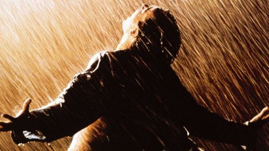

Drama Films are serious presentations or stories with settings or life situations that portray realistic characters in conflict with either themselves, others, or forces of nature. A dramatic film shows us human beings at their best, their worst, and everything in-between. Each of the types of subject-matter themes have various kinds of dramatic plots. Dramatic films are probably the largest film genre because they include a broad spectrum of films. See also crime films, courtroom dramas, melodramas, epics (historical dramas), biopics (biographical), or romantic genres - just some of the other genres that have developed from the dramatic genre.
Dramatic themes often include current issues, societal ills, and problems, concerns or injustices, such as racial prejudice, religious intolerance (such as anti-Semitism), drug addiction, poverty, political unrest, the corruption of power, alcoholism, class divisions, sexual inequality, mental illness, corrupt societal institutions, violence toward women or other explosive issues of the times. These films have successfully drawn attention to the issues by taking advantage of the topical interest of the subject. Although dramatic films have often dealt frankly and realistically with social problems, the tendency has been for Hollywood, especially during earlier times of censorship, to exonerate society and institutions and to blame problems on an individual, who more often than not, would be punished for his/her transgressions.
Comedy Films are "make 'em laugh" films designed to elicit laughter from the audience. Comedies are light-hearted dramas, crafted to amuse, entertain, and provoke enjoyment. The comedy genre humorously exaggerates the situation, the language, action, and characters. Comedies observe the deficiencies, foibles, and frustrations of life, providing merriment and a momentary escape from day-to-day life. They usually have happy endings, although the humor may have a serious or pessimistic side.
Comedies usually come in two general formats: comedian-led (with well-timed gags, jokes, or sketches) and situation-comedies that are told within a narrative. Both comedy elements may appear together and/or overlap. Comedy hybrids commonly exist with other major genres, such as musical-comedy, horror-comedy, and comedy-thriller. Comedies have also been classified in various subgenres, such as romantic comedy, crime/caper comedy, sports comedy, teen or coming-of-age comedy, social-class comedy, military comedy, fish-out-of-water comedy, and gross-out comedy. There are also many different kinds, types, or forms of comedy.
Epics-Historical Films often take an historical or imagined event, mythic, legendary, or heroic figure, and add an extravagant setting and lavish costumes, accompanied by grandeur and spectacle and a sweeping musical score. Epics, costume dramas, historical dramas, war film epics, medieval romps, or 'period pictures' are tales that often cover a large expanse of time set against a vast, panoramic backdrop. In an episodic manner, they follow the continuing adventures of the hero(s), who are presented in the context of great historical events of the past.
Epics are historical films that recreate past events. They are expensive and lavish to produce, because they require elaborate and panoramic settings, on-location filming, authentic period costumes, inflated action on a massive scale and large casts of characters. Biopic (biographical) films are often less lavish versions of the epic film.
Epics often rewrite history, suffering from inauthenticity, fictitious recreations, excessive religiosity, hard-to-follow details and characters, romantic dreamworlds, ostentatious vulgarity, political correctness, and leaden scripts. Accuracy is sometimes sacrificed: the chronology is telescoped or modified, and the political/historical forces take a back seat to the personalization and ideological slant of the story.